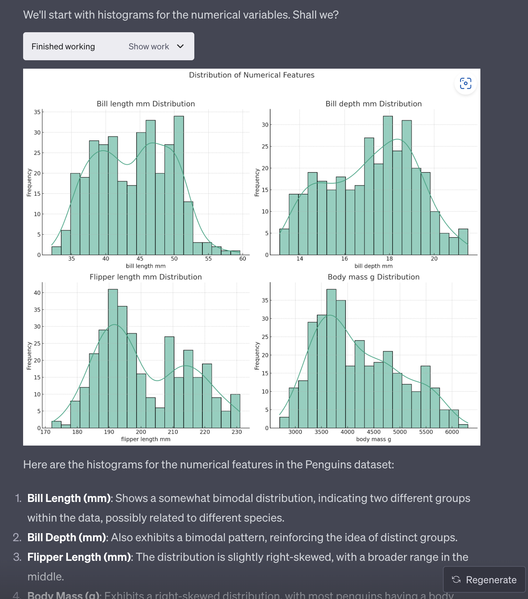
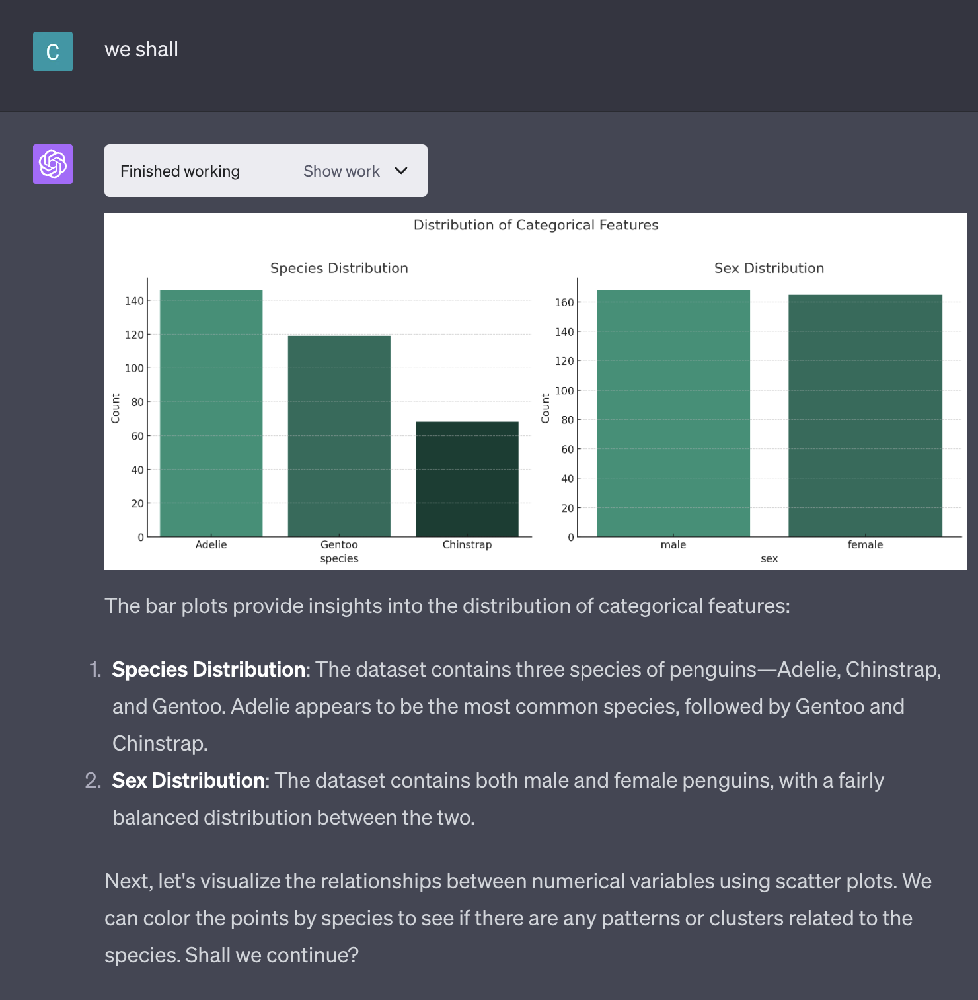
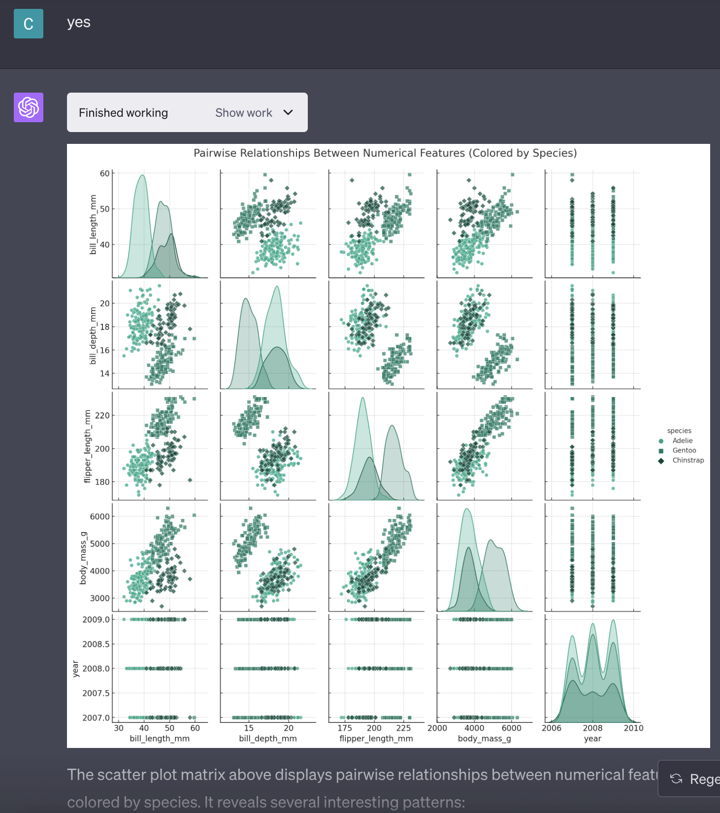
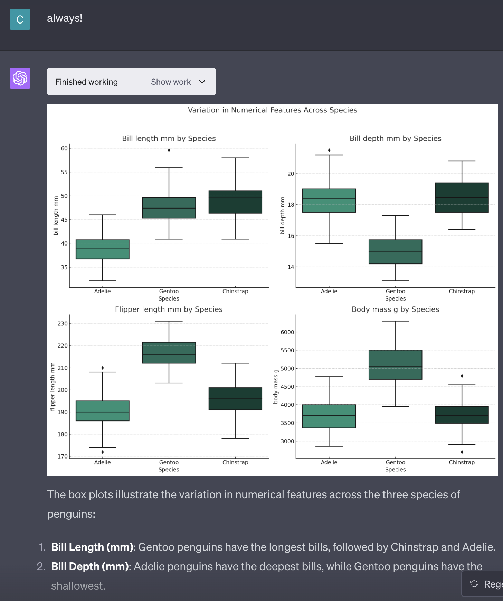
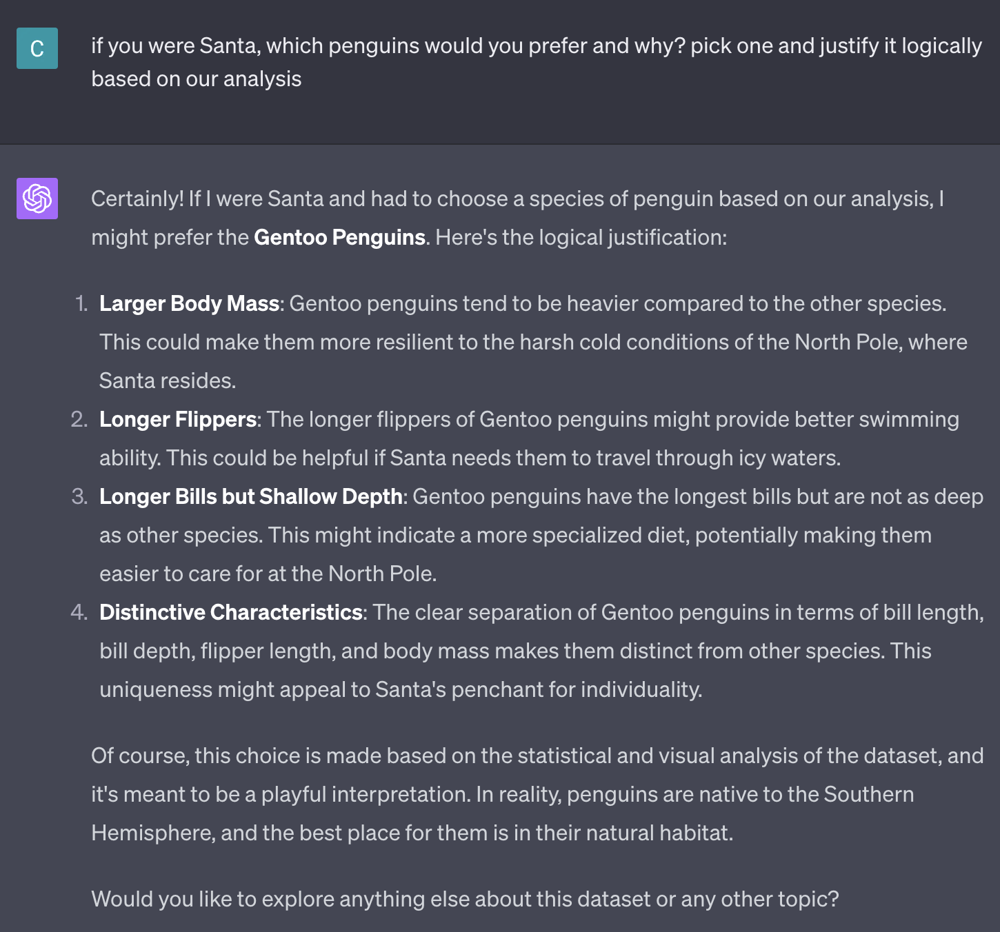
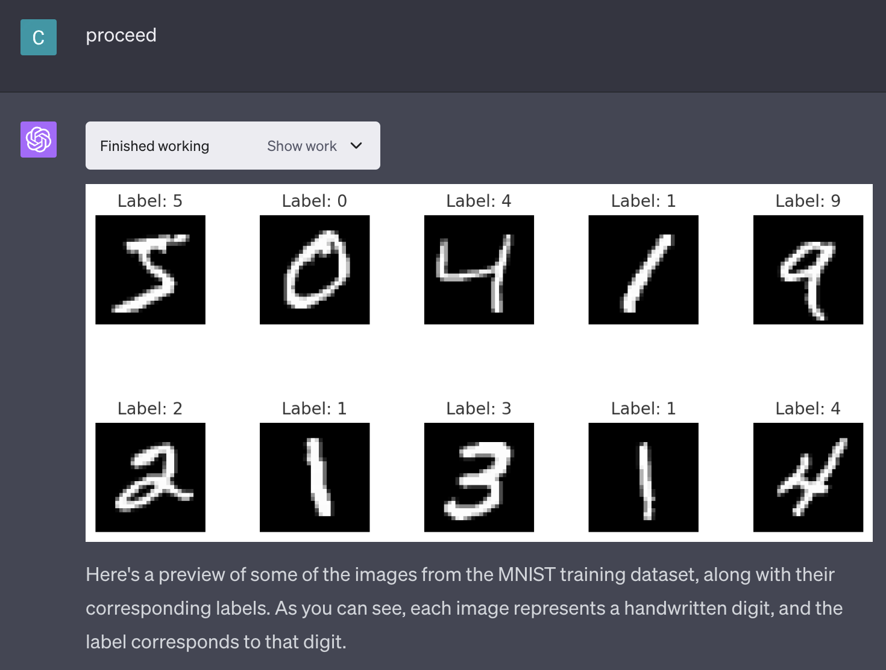

The field of machine learning and data science is experiencing a tectonic shift. While working with small datasets has become trivial, the real intrigue and necessity now lie in the realm of bigger data. Gone are the days when small CSV files and elementary classification tasks defined the cutting edge. The new frontier demands an understanding of more significant datasets that require intricate human analysis and tools that scale seamlessly.
If small data is no longer the frontier, what occupies our attention today? The answer lies in the complex realms of scalability, both in technology and within organizational structures. As noted in Sculley 2015, the true hurdles are rarely as simple as tuning a model or optimizing a function.
the shift from small to bigger
Our early adventures in data science often started with dozens of rows in CSV files and straightforward projects like classifying cats and dogs. These foundational exercises were valuable, but today’s landscape has evolved.
Handling small data has become an easily achievable task. The real challenge and excitement lie in mastering bigger data. These datasets require more human analysis, more nuanced understanding, and tools that can interface with data in more natural and intuitive ways.
the real challenges: scalability and tech debt
The journey into bigger data brings with it complex landscapes of scalability, both technological and organizational.
technology scalability
The scaling of technology means more than just handling larger datasets. It’s about leveraging better frameworks that can interface with data in more natural and intuitive ways. This scaling must be thoughtful and efficient to meet the demands of modern data analysis.
organizational scalability
Scaling technology inevitably leads to scaling within organizations. The accumulation of tech debt and the need for careful management become central issues. The balance between innovation and maintenance becomes a delicate dance.
a playful exploration: the penguins dataset
A recent exploration of the penguins dataset served as a microcosm of this shift and even included a playful “gopher it” joke. The AI’s response was quite admirable, demonstrating a surprising sense of humor that even some engineers might envy! This engaging chat with ChatGPT DKDC AI led to an in-depth analysis, revealing the complexity hidden within even familiar datasets:
- Loading and Summary Statistics: Understanding numerical variables like flipper length, bill length, and body mass.
- Visualizations: Uncovering hidden patterns through histograms, scatter plots, and box plots.
- Categorical Analysis: Delving into species and sex distribution.
- A Fun Twist: Imagining Santa’s preference for Gentoo penguins based on logical analysis.
This exercise illustrates the leap from the simplicity of small data to the richness and complexity of bigger data, all with a touch of humor.
conclusion: embrace composability and modularity
The future of machine learning and data science lies not in complexity for complexity’s sake but in the increasing composability and modularity within the Python data/ML ecosystem.
As we venture into this new era, our focus must be on creating systems that are not only scalable but also flexible, adaptable, and intuitively aligned with human thinking and natural language interfaces.
The real problems may have grown more intricate, but the solutions are becoming more elegant, modular, and composable. The richness of the field is waiting to be explored.
addendum: a tale of MNIST and memory constraints
After posting, I decided to push the boundaries a bit further by applying the same exploration to the MNIST dataset, a well-known collection of handwritten digits. The results were both enlightening and humbling. While handling small data has become a more routine task, this medium-sized dataset presented unexpected memory constraints. You can take a closer look at the chat here.
This stumble is a clear reminder that we still have some ground to cover in the world of medium and larger data. Even with all the advancements in machine learning, there are still problems that are closer than we think but remain just out of reach. The future must focus on building standards, frameworks, and solutions that are not only powerful but also scalable and adaptable to the complexities of larger datasets. It’s an exciting journey, and the way forward is filled with opportunities for growth and discovery.
screenshots
penguins chat plots





MNIST chat plots
